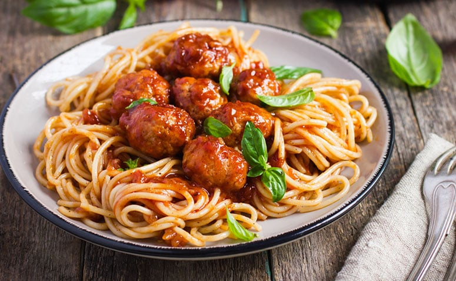

Prato N°4
Este prato é uma experiência gastronômica incrível, feita com ingredientes de qualidade excepcional. Cada garfada é uma explosão de sabor, graças à picanha suculenta grelhada e às batatas fritas crocantes que harmonizam perfeitamente com o arroz cozido. A carne bovina macia e saborosa é cuidadosamente selecionada e preparada com maestria, tornando cada mordida uma delícia para os sentidos. As batatas fritas são crocantes por fora e macias por dentro, o complemento perfeito para o saboroso prato. Com nutrientes essenciais e um sabor indescritível, este prato é a escolha perfeita para aqueles que procuram uma refeição satisfatória e nutritiva.
R$ 37,00
